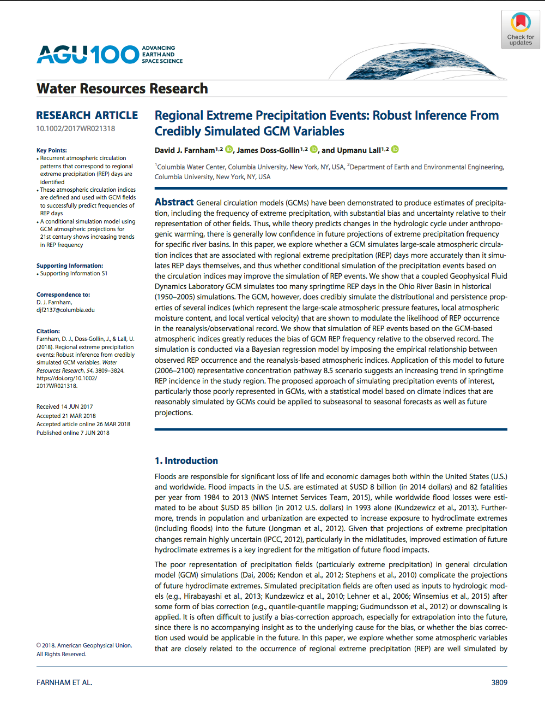

Paper on Drivers of Heavy Rainfall in the Ohio River Basin in WRR
Posted on Mon 26 March 2018 in updates
My paper with David Farnham (lead author) and Upmanu Lall titled Regional Extreme Precipitation Events: Robust Inference From Credibly Simulated GCM Variables has been published in Water Resources Research!
In this paper we use the Ohio River basin and a GFDL GCM (a global climate model) to explore some questions which are of wide interest to the hydrology and flood risk management communities:
- Are extreme springtime precipitation events relevant for floods well simulated by the GCM? [No]
- Can atmospheric indices associated with the onset of extreme precipitation events be identified from reanalysis? [Yes]
- Are these atmospheric indices credibly simulated by the GCM? [Yes]
- If GCMs represent the large‐scale atmospheric indices more credibly than they do the REP events, can we use the GCM derived atmospheric indices to directly simulate extreme precipitation events in the current and future climate? [Potentially]
Using GCMs to inform the probability of events of interest into the future is an area of active interest, and the problems with many existing approaches are well-known. As such, we hope this paper contributes to the broader investigation of how GCMs can be most useful in the quest to project changes in risk and that it can provoke some interesting thought and discussion.
If you have any ideas or suggestions, you can leave a comment below, you can contact me or you can contact David, who is the paper's corresponding author. Thanks for your thoughts!
